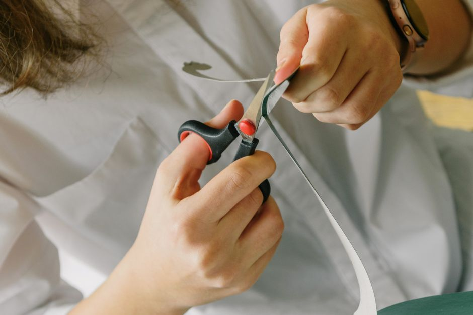

How to Use Plastic Bottles to Create an Automated Watering System for Indoor Plants
When it comes to indoor gardening, maintaining the perfect watering schedule can be a challenge. Enter the plastic bottle irrigation system—a simple, cost-effective solution that ensures your plants get the water they need, exactly when they need it. This guide will walk you through the steps to create your own automated watering system, tailored specifically for indoor plants.
Materials Needed
- 1 or 2 clean, empty plastic bottles (preferably 1.5 liters)
- A sharp scissors or a utility knife
- A needle or a small nail
- A small piece of clay or modeling dough
- String or a piece of wire
- Markers or labels
- Watering can or a jug of water
Step-by-Step Guide
Step 1: Choosing Your Bottles
Select two bottles—one to be the reservoir and the other to serve as the dripper. The reservoir should be larger to ensure a steady supply of water, while the dripper will be smaller to facilitate the distribution.
Step 2: Modifying the Reservoir

Photo: Ksenia Chernaya / Pexels
- Drill or Cut Holes: Using a utility knife or scissors, carefully cut a hole in the side of the reservoir bottle, about 2 inches from the bottom. This will allow water to slowly seep into the dripper bottle.
- Secure the Dripper Bottle: Insert the smaller dripper bottle into the hole you just created. Secure it with clay or modeling dough to ensure a watertight seal.
Step 3: Setting Up the Dripper
- Drill or Cut the Bottom: At the bottom of the dripper bottle, use a needle or a small nail to create a small hole. This will allow water to flow out slowly, providing a steady drip.
- Attach the Bottle: Place the dripper bottle upside down on a saucer or tray. This will catch any excess water and prevent any overflow.
Step 4: Hanging the System
- Attach the Bottles: Use a string or a piece of wire to tie the reservoir bottle to the dripper bottle. Ensure the dripper bottle hangs slightly lower than the reservoir.
- Hang the System: Find a suitable spot for your system. It should be placed near your plants, but not directly under them to avoid any drips on the leaves.
Step 5: Filling the System
- Prepare the Reservoir: Fill the reservoir bottle with water. To ensure accurate watering, aim to fill it to about 75% capacity.
- Label the Bottles: Use markers to label the reservoir and dripper bottles. This will help you keep track of which bottle is which and make refilling easier.
Step 6: Testing Your System
- Turn On the System: Once everything is set up, your system is ready to use. Allow it to run for a few minutes to ensure it’s working properly.
- Adjust the Frequency: Depending on your plant’s needs, you might need to adjust how often you refill the reservoir. A good rule of thumb is to check the system every 2-3 days.
Example Scenario
Imagine you have a small office plant that you often forget to water. You decide to set up a simple irrigation system using a 1.5-liter bottle. You fill the larger bottle with water, cut a hole near the bottom, and insert the smaller bottle. After securing the bottles, you hang the system near your desk. Each morning, you check the system and refill the larger bottle as needed. Over the next few weeks, you notice your plant looking healthier and more vibrant than ever before.
By setting up this automated watering system, you ensure your plants get the right amount of water at the right time, making your indoor gardening experience easier and more enjoyable.
Recommended products
As an Amazon Associate, I earn from qualifying purchases.